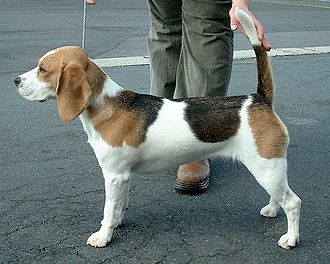

The Beagle Blog
The beagle is a breed of small scent hound, similar in appearance to the much larger foxhound. The beagle was developed primarily for hunting hare, known as beagling. Possessing a great sense of smell and superior tracking instincts, the beagle is the primary breed used as a detection dog for prohibited agricultural imports and foodstuffs in quarantine around the world. The beagle is a popular pet due to its size and good temper.
Read moreImages
Trivia
- 13–16 in (33–41 cm)
- Weight - 22–25 lb (10.0–11.3 kg)
- Coat - Short haired, hard coat of medium length
- Colour - Tricolor or white in combination with black & tan/brown or brown/tan or yellow/white
- Life span - 12.5 years